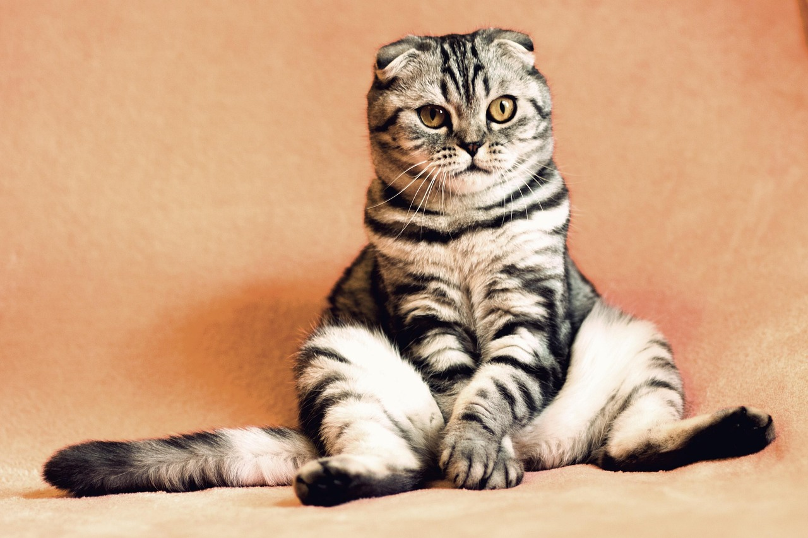

Once upon a time, in a quiet little town, lived a curious cat named Max. Max loved exploring rooftops, chasing butterflies, and sneaking into neighbors' backyards.
One sunny afternoon, Max saw a bird fly over the fence. Without thinking, he jumped after it—and landed in a garden full of singing flowers!
The flowers danced and told Max stories of magical lands beyond the hills. Max purred with excitement. He knew this was just the beginning of his greatest adventure!
